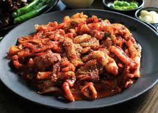

메뉴명: 오리불고기

메뉴 설명
: 신선한 오리고기를 양념에 재워 구워낸 건강식 요리입니다.
칼로리: 약 450~500kcal (1인분 기준)
나트륨: 약 1,200~1,500mg
재료
오리고기 200g, 대파 1대, 고추장 2큰술, 간장 1큰술, 설탕 1큰술, 다진 마늘 1작은술
레시피
1. 오리고기를 양념에 재웁니다.
2. 팬에 오리고기를 넣고 중불에서 익힙니다.
3. 대파를 넣어 마무리합니다.